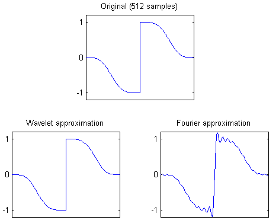
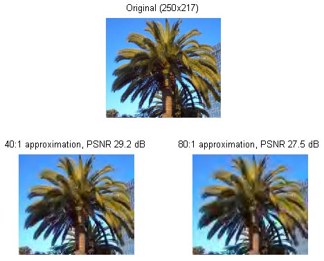
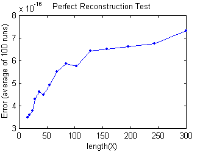
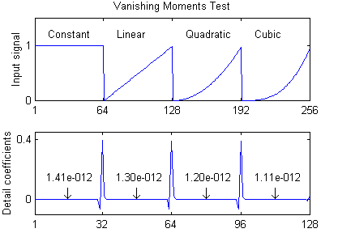

| waveletcdf97 | |
| by Pascal Getreuer | |
The MATLAB function waveletcdf97 included in this package is a self-contained M-function for applying the Cohen-Daubechies-Feauveau 9/7 (CDF 9/7) wavelet transform. This wavelet is an especially effective biorthogonal wavelet, used by the FBI for fingerprint compression and selected for the JPEG2000 standard [1].
Y = waveletcdf97(X, L) decomposes X with L stages of the CDF 9/7 wavelet. For the inverse transform, waveletcdf97(X, -L) inverts L stages. Filter boundary handling is half-sample symmetric.
X may be of any size; it need not have size divisible by 2L. For example, if X has length 9, one stage of decomposition produces a lowpass subband of length 5 and a highpass subband of length 4. Transforms of any length have perfect reconstruction (exact inversion).
If X is a matrix, waveletcdf97 performs a (tensor) 2D wavelet transform. If X has three dimensions, the 2D transform is applied along the first two dimensions.
This package includes a demo program, waveletcdf97_demo, that uses waveletcdf97 for signal approximation. Signal approximation is the problem of representing a signal with as few components as possible. This is similar to lossy image compression, but ignoring the problems of quantization and encoding.
Wavelets are particularly efficient for approximating piecewise-smooth signals. This first demo uses the CDF 9/7 wavelet to represent a piecewise-smooth signal.
NumComponents = 40; % Approximation with 40 components %%% Construct the test signal %%% N = 512; % Signal length t = linspace(-1.7,1.7,N); X = sign(t).*exp(-t.^4); %%% Wavelet approximation %%% Level = 9; % Use 9 levels of decomposition Y = waveletcdf97(X,Level); % Transform the signal Y = keep(Y,NumComponents); % Keep only 40 components R = waveletcdf97(Y,-Level); % Invert to obtain the approximation norm(X-R) % Compute RMS error %%% Fourier approximation %%% Y = fft(X); % Transform Y = keep(Y,NumComponents); % Keep only 40 components R2 = real(ifft(Y)); % Invert norm(X-R2) % Compute RMS error
The figure below shows the resulting wavelet approximation using only 40 out of 512 components. Fourier approximation with 40 components is shown for comparison. The wavelet approximation has RMS error of 0.014 while the Fourier approximation has RMS error of 2.244.

The second demo applies waveletcdf97 to image approximation. First, the input image is converted from RGB to the JPEG Y'CbCr colorspace. The Y'CbCr image is transformed using waveletcdf97, all but the largest transform coefficients are set to zero, and then inverse transformed.
X = double(imread('palm.jpg'))/255; % Load the demo image subplot(2,1,1); image(X); axis image X = RGBToYCbCr(X); % Convert to Y'CbCr L = 6; Y = waveletcdf97(X,L); % Transform the image R = waveletcdf97(keep(Y,1/40),-L); % 40:1 approximation subplot(2,2,3); image(YCbCrToRGB(R)); axis image R = waveletcdf97(keep(Y,1/80),-L); % 80:1 approximation subplot(2,2,4); image(YCbCrToRGB(R)); axis image

In the first test, a random signal X is transformed one stage, then inverse transformed, and the result is compared to the original. Analytically, the transform is exactly inverted--the scheme is said to have "perfect reconstruction." This test verifies that this property holds to machine precision.
Runs = 100; % Number of runs to average N = ceil(logspace(... % Lengths to test log10(15),log10(300),15)); for k = 1:length(N) % Create random input matrices X = rand(N(k),1,Runs); % Forward transform followed by inverse R = waveletcdf97(waveletcdf97(X,1),-1); % Compute the average error AvgError(k) = mean(max(abs(permute(X - R,[1,3,2])),[],1)); fprintf(' length(X) = %3d Error = %.2e\n',N(k),AvgError(k)); end plot(N,AvgError,'.-');
Code output:

length(X) = 15 Error = 3.34e-016 length(X) = 19 Error = 3.45e-016 length(X) = 24 Error = 4.25e-016 length(X) = 29 Error = 4.30e-016 length(X) = 36 Error = 4.63e-016 length(X) = 44 Error = 4.91e-016 length(X) = 55 Error = 5.00e-016 length(X) = 68 Error = 5.53e-016 length(X) = 84 Error = 5.55e-016 length(X) = 103 Error = 5.99e-016 length(X) = 128 Error = 5.90e-016 length(X) = 158 Error = 6.58e-016 length(X) = 196 Error = 6.90e-016 length(X) = 243 Error = 7.17e-016 length(X) = 300 Error = 7.00e-016
The CDF 9/7 wavelet is designed such that where the input signal is locally a polynomial of cubic degree or lower, the resulting detail (highpass) coefficients are equal to zero. A wavelet is said to have "N vanishing moments" if it has this property on polynomials up to degree N-1, so CDF 9/7 has 4 vanishing moments. This test transforms a piecewise polynomial signal and displays the largest detail coefficient magnitudes, verifying that the vanishing moments hold to reasonable accuracy.
N = 64; t = (0:N-1)/N; X = [t.^0,t.^1,t.^2,t.^3]; Y = waveletcdf97(X,1); norm(Y(2*N+2:2.5*N-2),inf) % Largest detail coefficient from t^0 norm(Y(2.5*N+2:3*N-2),inf) % Largest detail coefficient from t^1 norm(Y(3*N+2:3.5*N-2),inf) % Largest detail coefficient from t^2 norm(Y(3.5*N+2:4*N-2),inf) % Largest detail coefficient from t^3 subplot(2,1,1); plot(X); subplot(2,1,2); plot(Y(2*N+1:4*N));
Code output:

Locally constant Largest detail coefficient = 1.41e-012 Locally linear Largest detail coefficient = 1.30e-012 Locally quadratic Largest detail coefficient = 1.20e-012 Locally cubic Largest detail coefficient = 1.11e-012
The code is written specialized for the CDF 9/7 wavelet in lifting scheme implementation. Sweldens' lifting scheme [2] represents a wavelet transform as a sequence of predict and update steps. Let X=[X(1), X(2), ... X(2N)] be an array of length 2N. The lifting scheme begins with the "polyphase decomposition," splitting X into two subbands, each of length N:
Xo=[X(1),X(3),X(5),... X(2N-1)],
Since Xo and Xe can be merged to recover X, no information has been lost.
Next, the scheme performs lifting steps on the subbands Xo and Xe. Let p be a filter, then
Xe'= Xe + p*Xo
is called a "prediction" step, where * denotes convolution. Similarly, Xo'= Xo + u*Xe is called an "update" step. Notice that Xe can always be recovered from Xe' with
Xe'= Xe - p*Xo.
This simple relationship between a forward step and an inverse step is the key to the lifting scheme: any sequence of prediction and update steps can be "undone" to recover Xo and Xe.
Any FIR wavelet transform can be factored into a sequence of lifting steps [3]. For the CDF 9/7 wavelet, the lifting scheme decomposition used in waveletcdf97 is
|
Xo = [X(1),X(3),X(5),...
X(2N-1)] |
| Xe = [X(2),X(4),X(6),
... X(2N)] Xe1(n) = Xe(n) + a(Xo(n+1) + Xo(n)) Xo1(n) = Xo(n) + b(Xe1(n) + Xe1(n-1)) Xe2(n) = Xe1(n) + d(Xo1(n+1) + Xo1(n)) Xo2(n) = Xo2(n) + g(Xe2(n) + Xe2(n-1)) |
The subbands are then normalized with Xo3 = k Xo2 and Xe3 = k-1 Xe2. For a multi-level decomposition, the algorithm above is repeated with X = Xo3.The numbers a, b, d, g, k are irrational values approximately equal to
|
a » -1.58613432, b » -0.05298011854, d » 0.8829110762, g » 0.4435068522, k » 1.149604398. |
The inverse CDF 9/7 transform is done by performing the lifting steps in the reverse order and with a, b, d, g negated.
What if X has odd length 2N-1? The trick is to extrapolate one extra element X(2N)=x in such a way that transforming the augmented X has Xe3(N)=0. This zero element can then be thrown away without losing information. The result is a decomposition with N elements in Xo3 and N-1 elements in Xe3 for a total of 2N-1 elements; the decomposition is nonredundant. To invert an odd-length transform, append the zero element Xe3(N)=0 and proceed with the usual even-length inverse transform.
The formula for the extrapolated element x such that Xe3(N)=0 is a linear function of the elements of X that depends on the filter boundary handling. For the half-sample symmetric boundary handling used in waveletcdf97, the extrapolation is
| x = |
| [abd X(2N-3) + bd X(2N-2) + (a + 3abd + d) X(2N-1)]. |
| [1] M. Unser and T. Blu. "Mathematical Properties of the JPEG2000 Wavelet Filters." IEEE Trans. on Image Proc., vol. 12, no. 9, Sep. 2003. |
| [2] W. Sweldens. "The Lifting Scheme: A Construction of Second Generation Wavelets." SIAM J. Mathematical Analysis, vol. 29, no. 2, pp. 511-546, 1997. |
| [3] I. Daubechies and W. Sweldens. "Factoring Wavelet Transforms into Lifting Steps." 1996. |